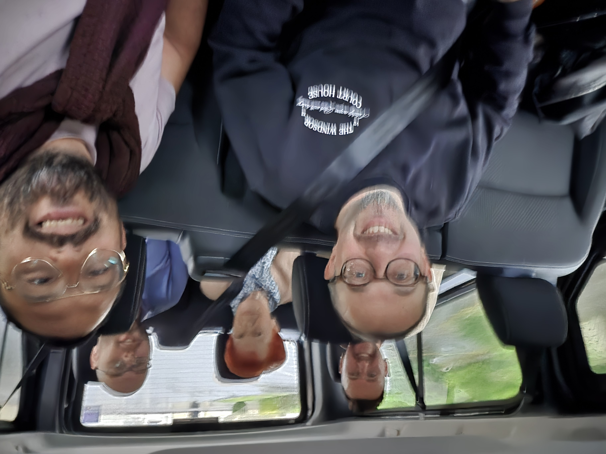
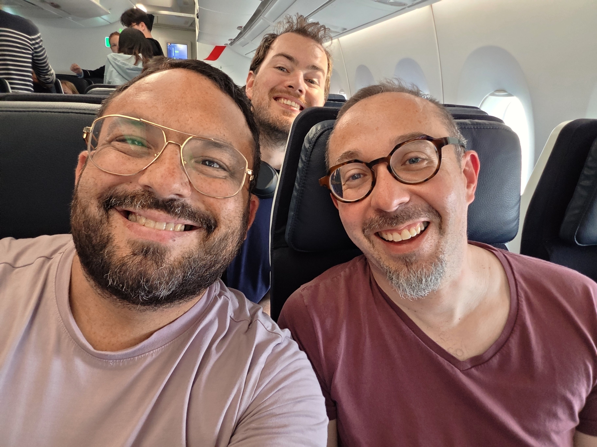
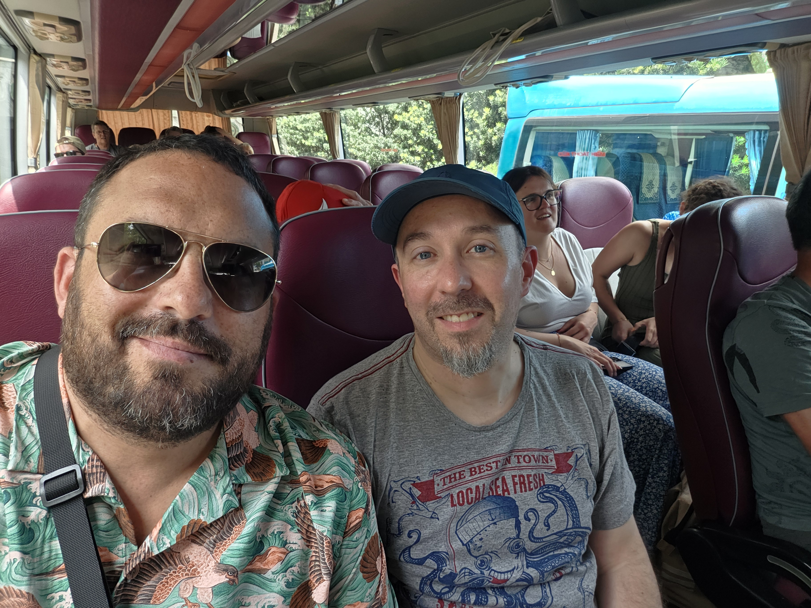
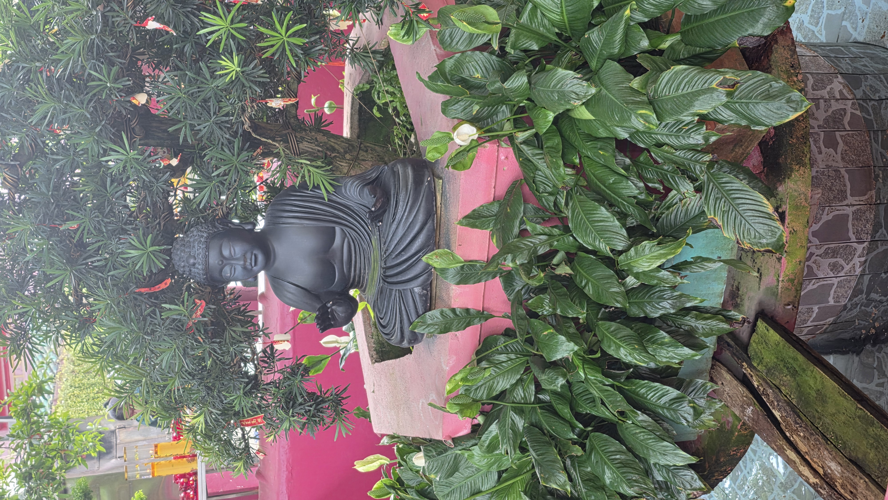
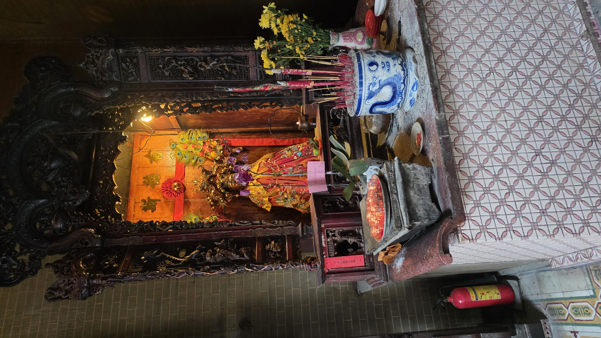
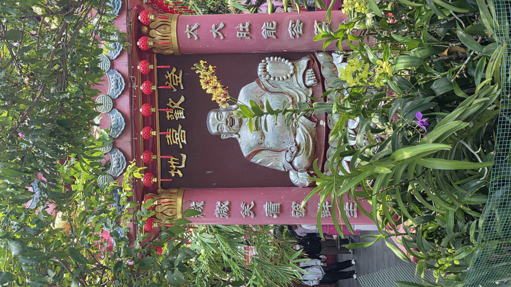
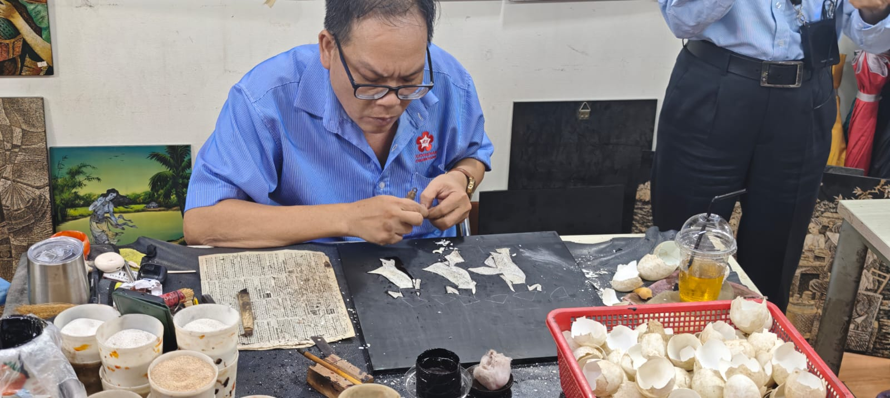
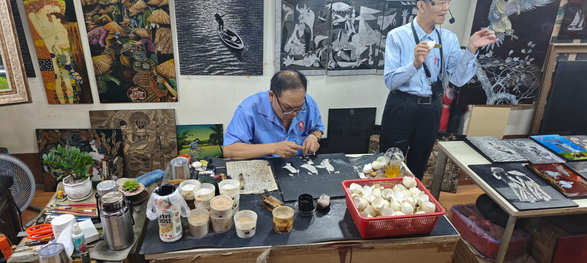
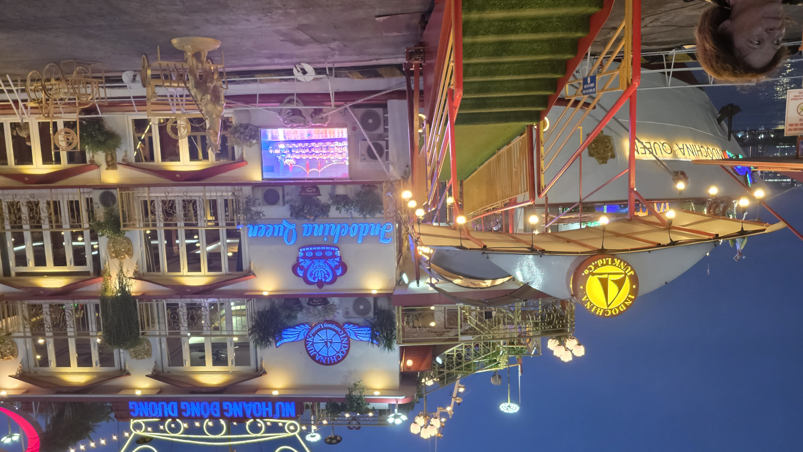

1
Le grand départ & l'arrivée à Saïgon

Ce matin-là, le ciel de Monts-en-Bessin était gris et pluvieux quand nous avons quitté la maison à 7h30. Un transport nous attendait — pas question de conduire — ce qui nous permettait d'être déjà ensemble, soudés, avant même d'avoir décollé. Le groupe était au complet : Mireille, Gilbert, Yohan, Xavier, Cédric et moi.
Arrivés à Charles-de-Gaulle vers 10h30, le stress s'est installé d'un coup. Xavier, véritable expert de l'aéroport, nous a guidés avec une assurance qui a rassuré tout le monde. Le temps d'une pause avec Cédric, nous en avons rêvé ensemble — cet instant tant attendu, cette destination qui nous appelait depuis si longtemps.

Le 6 mai, à 6h40 heure locale, les roues touchaient enfin le sol vietnamien. Le ciel n'était pas franchement clément, mais dès les premières secondes hors de l'avion, la chaleur et l'humidité nous ont enveloppés d'un seul coup. Pour moi, ce n'était pas simplement l'arrivée dans un nouveau pays. C'était un retour aux sources, une terre de racines.

À la sortie de l'aéroport, Taï, notre guide pour dix jours, nous attendait avec le sourire. Le chauffeur de bus s'est trompé d'adresse — premier couac du voyage, vite rattrapé. Une heure plus tard, nous arrivions enfin au bon hôtel.
« Des milliers de scooters qui filent dans tous les sens — et pourtant, tout se fait avec une douceur étonnante. »
Les pagodes de Saïgon


À 10h15, nous partons en excursion dans le Saïgon colonial. La cathédrale Notre-Dame construite en 1880, et la Poste centrale signée Gustave Eiffel impressionnent. Mais c'est à la pagode de Ngoc Hoang que quelque chose se passe vraiment en moi.
« Une émotion forte m'a envahie — c'est tellement beau. Les Vietnamiens prient dans un silence habité. Je ressens un bien-être immédiat, comme si j'étais chez moi. »

L'après-midi nous emmène dans le quartier chinois de Cholon — les échoppes colorées de la rue des herboristes, le marché de Binh Tay, et la pagode de Thien Hau ornée de figurines en céramiques d'une finesse remarquable.
L'atelier de laque — un savoir-faire ancestral


En fin de journée, Taï nous entraîne dans un atelier de laque — une découverte fascinante. La laque, extraite directement de l'arbre lacquier, est travaillée entièrement à la main selon des techniques ancestrales. Nous découvrons deux méthodes remarquables : la méthode nacrée, avec des fragments de nacre incrustés dans la laque noire, et la méthode à l'œuf, où des éclats de coquille sont posés un par un à la pince pour créer des tableaux texturés d'une beauté rare.
« C'était vraiment très beau et impressionnant — un travail réalisé entièrement à la main, avec une patience et une délicatesse qui forcent le respect. »
Dîner-croisière sur l'Indochina Queen


Le soir, le groupe embarque sur l'Indochina Queen pour un dîner-croisière sur le fleuve de Saïgon. Le bateau est magnifiquement décoré ; un buffet généreux nous attend — nems, riz, thai rolls, soupes parfumées. Un spectacle de danseuses vient agrémenter le repas avant que le bateau ne s'élance sur le fleuve.
De retour à l'hôtel, le Muong Thanh Luxury 4★ nous accueille dans de grandes et belles chambres. Nous avons dormi comme des pierres.